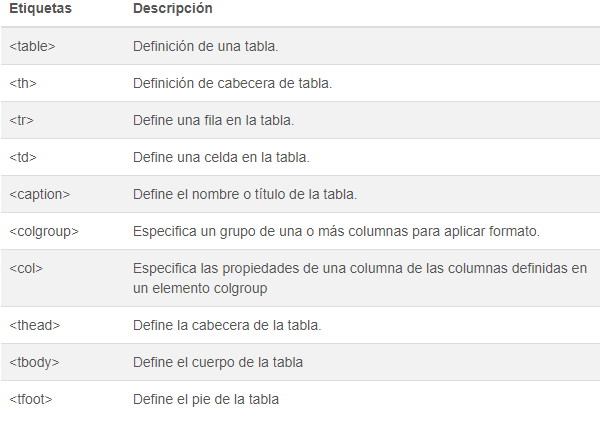

Preguntas a responder
¿Cuál es la diferencia entre Internet y la World Wide Web?
Internet es una inmensa red de computadoras alrededor de todo el mundo conectadas entre sí.
En cambio, la web (la World Wide Web) es una enorme colección de páginas que se asienta sobreesa red de computadoras.
¿Cuáles son las partes de un URL?
- Protocolo: la mayoría de las veces son HTTP (o HTTPS para una versión segura de HTTP).
- Dominio: nombre que se utiliza para identificar una o más direcciones IP donde se encuentra el recurso.
- Ruta: especifica la ubicación del recurso en el servidor.
- Parámetros: datos adicionales utilizados para identificar o filtrar el recurso en el servidor.
PARTES DE UNA URL:

Imagen obtenida de: Free Code Camp
¿Cuál es el propósito de los métodos HTTP: GET, HEAD, POST, PUT, PATCH, DELETE?
Sirven para indicar la acción que se desea realizar para un recurso determinado.
¿Qué método HTTP se debe utilizar al enviar un formulario HTML, por ejemplo cuando ingresas tu usuario y contraseña en algún sitio? ¿Por qué?
Para generar un nuevo usuario con el formulario se emplea el método post, esto debido a que este método sirve enviar datos a un servidor y crear un recurso.
¿Qué método HTTP se utiliza cuando a través de un navegador web se accede a una página a través de un URL?
Utilizando el método de petición GET, de modo que recupere los datos del URL
Un servidor web devuelve una respuesta HTTP con código 200. ¿Qué significa esto? ¿Ocurrió algún error?
No, esto quiere decir que la solicitud fue exitosa.
¿Es responsabilidad del desarrollador corregir un sitio web si un usuario reporta que intentó acceder al sitio y se encontró con un error 404? ¿Por qué?
Se menciona que los errores que empiecen con un 4xx es debido a que la solicitud que genera un usuario es incorrecta, por lo cual el desarrollador no debe de corregir nada.
¿Es responsabilidad del desarrollador corregir un sitio web si un usuario reporta que intentó acceder al sitio y se encontró con un error 500? ¿Por qué?
Un error de este tipo indica que el error interno del servidor, por lo cual, en este caso el desarrollador si deberá corregir lo relacionado al error.
¿Qué significa que un atributo HTML5 esté depreciado o desaprobado (deprecated)? Menciona algunos elementos de HTML 4 que en HTML5 estén desaprobados.
Los tags y atributos desaprobados son partes del estándar HTML cuyo uso ya no es recomendado. Esto sucede dado que el estándar es actualizado de vez en cuando y alguno tags o características del lenguaje son agregada, removidas o desaprobadas.
- BASEFONT --> Permite cambiar algunas propiedades del texto (size, color, fuente).
- CENTER --> Crea una caja en bloque con el contenido centrado. En realidad, es equivalente a un div con align="center".
- FONT --> Indica el tamaño, color, o fuente del texto que contiene.
- STRIKE --> Muestra el texto tachado con una línea horizontal.
¿Cuáles son las diferencias principales entre HTML 4 y HTML5?

Imagen obtenida de: Sutori
- HTML5 continúa en progreso
- Sintaxis simplificada
- Nuevos elementos "encabezado" y "pie de página"
- Nuevos elementos "sección" y "artículo"
- Nuevos elementos "menú" y "figura"
- Nuevos elementos "audio" y "video"
- No más "b" y "font"
- Han desaparecido "frame", "center" y "big"
¿Qué componentes de estructura y estilo tiene una tabla?
La etiqueta "table", permite definir tablas, para componerlas se hace uso de otras etiquetas, las cuales no tienen sentido sino están situadas dentro de una etiqueta de tabla.

Tabla obtenida de: Asus Net
¿Cuáles son los principales controles de una forma HTML5?
INPUT
- Los campos de texto "input" son los controles de formulario más básicos, permiten al usuario introducir cualquier tipo de datos.
- Las casillas de verificación se crean estableciendo el atributo type del elemento "input" en el valor checkbox.
- Un botón de opción se crea estableciendo el atributo type del elemento "input" en el valor radio.
BOTONES
- submit --> Envía los datos del formulario al servidor.
- reset --> Restablece todos los controles de formulario a sus valores por defecto.
- button --> Botones que no tienen efecto automático, pero que se pueden personalizar con código JavaScript.
¿Qué tanto soporte HTML5 tiene el navegador que utilizas?
Navegador Chrome
Datos obtenidos con: HTML5 Test
Sobre el ciclo de vida y desarrollo de los sistemas de información:
¿Cuál es el ciclo de vida de los sistemas de información?
- Fase de planificación. Se prepara el diseño y posterior implementación del sistema. Es necesario definir el alcance del proyecto, justificarlo y escoger una metodología para su desarrollo.
- Fase de análisis. Se busca concretar una serie de requisitos, que son los que regirán el nuevo sistema o los cambios a introducir en el antiguo, si con el proyecto se busca su actualización.
- Fase de diseño. Determinar cómo el nuevo sistema de información cumplirá con los requisitos necesarios. Se identifican soluciones potenciales, se evalúa y elige la más conveniente.
- Fase de desarrollo. Inicio de la producción.
- Fase de integración y periodo de pruebas. El objetivo de esta etapa es corroborar que el diseño propuesto cumple con los requisitos de negocio establecidos. Puede ser necesario repetir las pruebas tantas veces como haga falta para evitar errores.
- Fase de implementación. Instalación del hardware y software elegidos, crear las aplicaciones correspondientes, someterlas a pruebas, crear la documentación pertinente y capacitar a los usuarios.
¿Cuál es el ciclo de desarrollo de sistemas de información?